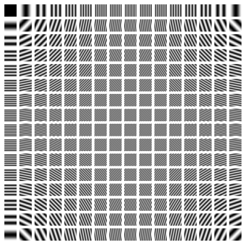
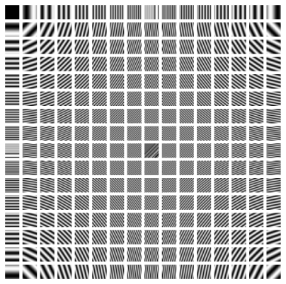
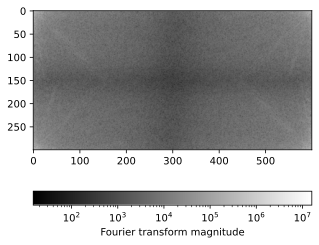
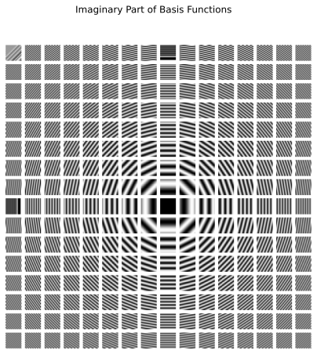
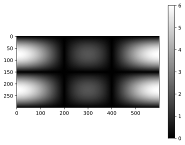
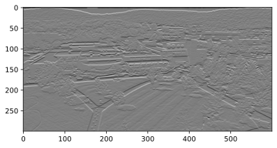

How a Camera Finds an Edge
Graph neural networks are neural networks for graph data, and they come from two different places. One branch grew out of language modeling: that is where node2vec and DeepWalk of Module 8 come from, where a random walk on the network is treated as a sentence. This module follows the other branch, which grew out of image processing.
So this page contains no graphs at all. You will detect an edge in a six-by-six picture by hand, discover that the operation you just performed has a name — convolution — and then see that the same operation can be described as keeping some waves and discarding others. That last sentence is the one we carry over to networks on the next page.
Edge detection: finding a boundary by subtraction
Edge detection is a classical problem in image processing. The goal is to identify the boundaries of objects in an image.
An image is a matrix of pixels. Each pixel has RGB values, each of which represents the intensity of red, green, and blue color. To simplify the problem, we focus on grayscale images, in which each pixel has only one value representing the brightness. In this case, an image is a 2D matrix, where each element is the brightness of one pixel.
Six by six pixels with a bright stripe down the middle
Human eyes are very sensitive to brightness changes. An edge in an image appears when there is a significant brightness change between adjacent pixels. To be more concrete, let’s consider a small example consisting of 6x6 pixels, with a vertical line from the top to the bottom, where the brightness is higher than the neighboring pixels. This is an edge we want to detect.
X = \begin{bmatrix} 10 & 10 & 80 & 10 & 10 & 10 \\ 10 & 10 & 80 & 10 & 10 & 10 \\ 10 & 10 & 80 & 10 & 10 & 10 \\ 10 & 10 & 80 & 10 & 10 & 10 \\ 10 & 10 & 80 & 10 & 10 & 10 \\ 10 & 10 & 80 & 10 & 10 & 10 \end{bmatrix}
Let’s zoom on the pixel at row 3, column 2 — the pixel immediately to the left of the bright stripe — together with its eight surrounding pixels.
Z = \begin{bmatrix} 10 & 10 & 80 \\ \textcolor{#593196}{10} & 10 & \textcolor{#c2410c}{80} \\ 10 & 10 & 80 \end{bmatrix}
The center of this 3 \times 3 block, Z_{22} = 10, is our pixel; its left neighbor is colored and so is its right one. An edge is a sudden change of brightness as we move sideways, so we take a derivative at the central pixel by subtracting the right neighbor from the left one:
\nabla Z_{22} = \textcolor{#593196}{Z_{2,1}} - \textcolor{#c2410c}{Z_{2,3}} = 10 - 80 = -70.
A number of size 70 where the flat parts of the picture give 0: the operator has noticed the stripe.
We name an operator by the direction in which it differentiates. This one compares a left neighbor with a right neighbor, so it is the horizontal derivative. Note the consequence, which trips everyone up once: the horizontal derivative is what lights up a vertical stripe, because a vertical stripe is what changes as you move horizontally.
Following the same process at every pixel gives us the horizontal derivative of the whole image.
\begin{bmatrix} - & -70 & 0 & 70 & 0 & - \\ - & -70 & 0 & 70 & 0 & - \\ - & -70 & 0 & 70 & 0 & - \\ - & -70 & 0 & 70 & 0 & - \\ - & -70 & 0 & 70 & 0 & - \\ - & -70 & 0 & 70 & 0 & - \end{bmatrix}
The symbol - indicates that the derivative is not defined because one of the neighboring pixels is out of the image boundary.
Read the row: 0 in the flat regions, and a pair of large responses -70 and +70 in the two columns flanking the stripe. On the stripe itself (column 3) the answer is 0, because there the left and right neighbors are both 10 and the operator only ever compares those two. A bright line therefore shows up not as one big number but as a matched pair of opposite sign, one on each shoulder. What matters is the magnitude: it is 70 next to the boundary and 0 everywhere else.
We can also build a derivative operator along the vertical direction, which subtracts the pixel below from the pixel above.
\nabla Z_{22} = Z_{1,2} - Z_{3,2}
And, when applied to the entire image, the result is
\begin{bmatrix} - & - & - & - & - & - \\ 0 & 0 & 0 & 0 & 0 & 0 \\ 0 & 0 & 0 & 0 & 0 & 0 \\ 0 & 0 & 0 & 0 & 0 & 0 \\ 0 & 0 & 0 & 0 & 0 & 0 \\ - & - & - & - & - & - \end{bmatrix}
Every defined entry is zero. Nothing in this picture changes as you move down a column — every row is identical — so the vertical derivative finds nothing at all. The stripe is invisible to it.
We can combine the horizontal and vertical derivatives to get the gradient of the image. For example,
\nabla Z_{22} = Z_{12} - Z_{32} + Z_{21} - Z_{23}
On this picture the vertical part contributes nothing, so wherever all four neighbors exist the result is exactly the horizontal derivative computed above.
One small table of weights, slid over every pixel
We observe that there is a repeated pattern in the derivative computation: we are taking addition and subtraction of neighboring pixels, with the same weights at every pixel. This motivates us to generalize the operation to a more general form.
\nabla Z_{22} = \sum_{i=-1}^1 \sum_{j=-1}^1 K_{h-(i+1),w-(j+1)} Z_{2+i, 2+j}
where K is a 3 \times 3 matrix, and w=h=3 represent the width and height of the kernel.
K = \begin{bmatrix} K_{11} & K_{12} & K_{13} \\ K_{21} & K_{22} & K_{23} \\ K_{31} & K_{32} & K_{33} \end{bmatrix}
The matrix K is called a kernel, and applying it to the image is called convolution.
The index of the kernel is conventionally reversed. Namely, we reorder the entries of the kernel such that
\begin{bmatrix} K_{33} & K_{32} & K_{31} \\ K_{23} & K_{22} & K_{21} \\ K_{13} & K_{12} & K_{11} \end{bmatrix}
Then, take the element-wise product with Z
\begin{bmatrix} Z_{11} K_{33} & Z_{12} K_{32} & Z_{13} K_{31} \\ Z_{21} K_{23} & Z_{22} K_{22} & Z_{23} K_{21} \\ Z_{31} K_{13} & Z_{32} K_{12} & Z_{33} K_{11} \end{bmatrix}
and sum up all the elements to get the new pixel value \nabla Z_{22}. Why do we reverse the kernel? This is to match with the mathematical definition of convolution, which will be introduced later.
The kernel used in the example above is a 3 \times 3 Prewitt operator, which in terms of K is
K_h = \begin{bmatrix} -1 & 0 & 1 \\ -1 & 0 & 1 \\ -1 & 0 & 1 \end{bmatrix} \quad \text{or} \quad K_v = \begin{bmatrix} -1 & -1 & -1 \\ 0 & 0 & 0 \\ 1 & 1 & 1 \end{bmatrix}
where K_h is the horizontal Prewitt operator (it differentiates left-to-right, so it finds vertical edges) and K_v is the vertical one (it differentiates top-to-bottom, so it finds horizontal edges).
A kernel represents a local pattern we want to detect. The new pixel value after the convolution is maximized when the pattern is most similar to the kernel in terms of the inner product. This can be confirmed by:
\nabla Z_{22} = \sum_{i=-1}^1 \sum_{j=-1}^1 K_{h-(i+1),w-(j+1)} Z_{2+i, 2+j} = \langle \hat K, Z \rangle
where \langle \cdot, \cdot \rangle is the inner product, and \hat K is the order-reversed kernel.
Check out this awesome interactive demo to see how different kernels work: Demo
Every row of pixels is a stack of waves
Convolution computes the new pixel values by sliding a kernel over an image. How is the resulting image related to the original image?
Before answering that, watch the sliding itself. Below is one row of the picture above — six numbers, with the bright stripe at position 3 — and the three-weight kernel [-1, 0, 1]. Four positions, three multiplications each; that is the whole operation. Step it, then take the window yourself.
To answer this question, let us consider a row of an image and convolve it with a kernel K.
\begin{aligned} X &= \begin{bmatrix} X_1 & X_2 & X_3 & X_4 & X_5 & X_6 \end{bmatrix} \\ K &= \begin{bmatrix} K_1 & K_2 & K_3 \end{bmatrix} \end{aligned}
The convolution of X and K is
X * K = \begin{bmatrix} X_1 K_3 + X_2 K_2 + X_3 K_1 & X_2 K_3 + X_3 K_2 + X_4 K_1 & X_3 K_3 + X_4 K_2 + X_5 K_1 & X_4 K_3 + X_5 K_2 + X_6 K_1 \end{bmatrix}
Written out, convolution is bookkeeping: four different sums, each one a shifted copy of the same three multiplications. That is awkward to compute and, worse, awkward to think about. A theorem called the convolution theorem replaces the whole thing with a single multiplication, at the price of first changing coordinates.
Instead of doing the sliding-window operation on the pixel values, we can:
- Transform both signals to the frequency domain using Fourier transform
- Multiply them together (much simpler!)
- Transform back to get the same result
Mathematically, the above steps can be written as:
- \mathcal{F}(X), \mathcal{F}(K) - Transform both signals to frequency domain (Fourier transform)
- \mathcal{F}(X) \cdot \mathcal{F}(K) - Multiply the transformed signals
- \mathcal{F}^{-1}(\mathcal{F}(X) \cdot \mathcal{F}(K)) - Transform back to get X * K
where \mathcal{F}^{-1} is the inverse Fourier transform that brings us back to the original domain.
What does \mathcal{F} actually do? It takes a signal — our row of six pixel values — and reports how much of each wave that signal is made of: a slow wave that rises and falls once across the row, a faster one that does it twice, and so on up to the fastest wave six pixels can carry. A row of constant brightness is pure slow wave. A row that alternates bright, dark, bright, dark is pure fast wave. Our row [10, 10, 80, 10, 10, 10] is a bit of everything, because a single sharp spike needs many waves to build.
That is all you need to carry forward. The formula that computes those weights uses complex exponentials, and it is written out in the appendix for anyone who wants it; nothing on the next page depends on reading it. What does matter is the one-sentence version:
The Fourier transform re-describes a signal by which waves it is made of, and the convolution theorem says that convolving with a kernel simply rescales each of those waves.
The same convolution, done by multiplying
Take the row and the kernel we already have, X = [10, 10, 80, 10, 10, 10] and K = [-1, 0, 1].
Done directly, the sliding window gives four numbers:
X * K = \begin{bmatrix} -70 & 0 & 70 & 0 \end{bmatrix}
which are exactly the four defined entries of one row of the horizontal derivative we computed by hand at the start of this page.
Done through the convolution theorem, we first pad K with zeros to [-1, 0, 1, 0, 0, 0], because entrywise multiplication needs the two signals to have the same length. Transforming both, multiplying, and transforming back returns six numbers:
\mathcal{F}^{-1}\left(\mathcal{F}(X) \cdot \mathcal{F}(K)\right) = \begin{bmatrix} 0 & 0 & -70 & 0 & 70 & 0 \end{bmatrix}
The first two are the positions where the kernel hangs off the left end of the row and wraps around to the other side — the transform treats the row as a loop. Drop those two and what remains is [-70, 0, 70, 0]: the direct convolution, to the last digit.
Two routes, one answer. The second route is the one that will survive the move to networks, because it never mentions “left” or “right”.
Take a photograph apart into waves
An image is a 2D matrix, and the 2D Fourier transform is just the 1D one applied twice: transform every row, then transform every column of the result. The convolution theorem is unchanged — multiply \mathcal{F}(X) by \mathcal{F}(K) entry by entry and transform back. (The formula is in the appendix.)
What changes is the basis. In 1D the waves are ripples along a line; in 2D they are corrugations across a plane, indexed by two frequencies, one for each direction.


Any grayscale picture, however complicated, is a weighted sum of these — and the Fourier transform is the list of weights.
A real photograph, taken apart into waves
Here is a real photograph, converted to grayscale.
Its Fourier transform is a matrix the same size as the photograph, one weight per basis wave. Plotted as an image (on a log scale, because the weights span many orders of magnitude), the weights concentrate overwhelmingly in the low frequencies at the corners: most of a photograph is slow, smooth variation, and only the object boundaries need fast waves.


Now convolve the photograph with the vertical Prewitt operator K_v — the one that differentiates down the columns, and therefore responds to horizontal edges. By the convolution theorem we can do it by multiplying, so look first at the kernel’s own transform.

This is the crucial picture. The kernel’s transform acts as a filter: multiplying \mathcal{F}(X) by \mathcal{F}(K) entrywise scales every wave in the photograph by the corresponding number in this plot. Waves that do not vary vertically are multiplied by zero and disappear — including the flat one, which is why the overall brightness of the picture is deleted. Fast vertical variation survives. In other words, the Prewitt kernel is a high-pass filter, written in the pixel domain.

A widespread application of the 2D Fourier transform is JPEG format. Here’s how it works:
- It first breaks the image into small 8x8 squares.
- It converts each square into frequencies using the Discrete Cosine Transform. The sine part is discarded for compression.
- It keeps the important low frequencies that our eyes can see well.
- It throws away most of the high frequencies that our eyes don’t notice much.
These steps make the file much smaller while still looking good to us.
The one sentence to carry to the next page
Convolving with a kernel in the pixel domain is the same thing as multiplying wave by wave in the frequency domain. An image is a sum of basis waves; a kernel is a filter that turns some of those waves down and lets others through. Edge detection is not really about edges — it is about keeping the fast waves.
Now notice what that sentence does not mention. It says nothing about “left neighbor”, “the pixel above”, or a 3 \times 3 square. It only needs a set of basis waves and one number per wave.
A network has no rows and no columns, so “the pixel above” means nothing on a network. But a network does have basis waves — that is the next page’s first job — and once we have them, everything above transfers.
What you can now do
- Detect an edge in a small image by hand, and say why the response sits beside a bright line rather than on it.
- Write any local pixel operation as a kernel, and name what pattern that kernel is looking for.
- State the convolution theorem and say what it buys: one multiplication instead of a sliding sum.
- Explain what makes a kernel a low-pass or a high-pass filter.
Next: Every Node Asks Its Neighbors, where the same three ideas are rebuilt on a network.